The (perhaps) limited role of phonology in prediction during language comprehension
Yiling Huo
1st Chandler House Symposium
Generation of predictions might be a universal principle of the brain:
Generation of predictions might be a universal principle of the brain:
Prediction during language processing:
"This morning I went to Starbucks to buy ... coffee"
"I eat rice"

Phonology in prediction?
DeLong et al. (2005)
Phonology in prediction?
However: Nieuwland et al. (2018) (N=356)
Two questions to ask:
- Can listeners use phonological information to generate predictions?
- Can listeners detect prediction errors / revise their predictions using phonology?
Experiments 1 and 2
Tone sandhi in Mandarin Chinese
Lexical tone: pitch contour that encodes meaning.
ma1 "mother", ma2 "hemp", ma3 "horse", ma4 "scold"
ma1ma1-ma4-ma3 "Mom scolds the horse."
Tone sandhi in Mandarin Chinese
Tone sandhi: lexical tone can undergo change triggered by neighboring linguistic environments.
The yi sandhi: numeral yi1 "one"
yi4tian1, yi4tiao2, yi4ba3, yi2ge4
The T3 sandhi: numeral liang3 "two"
xiao3gou3 → xiao2gou3
Experiments 1 and 2
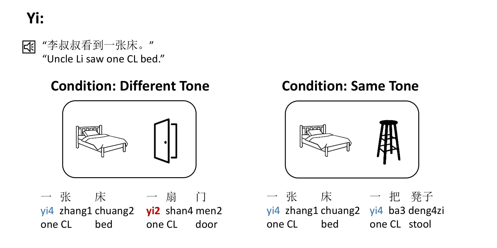Experiments 1 and 2
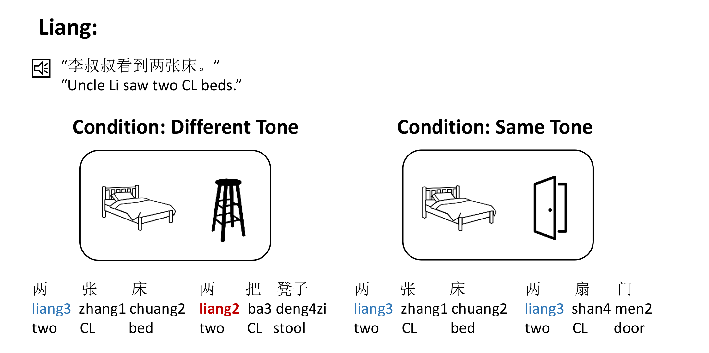Experiment 1 Results
The yi sandhi ("yi"):
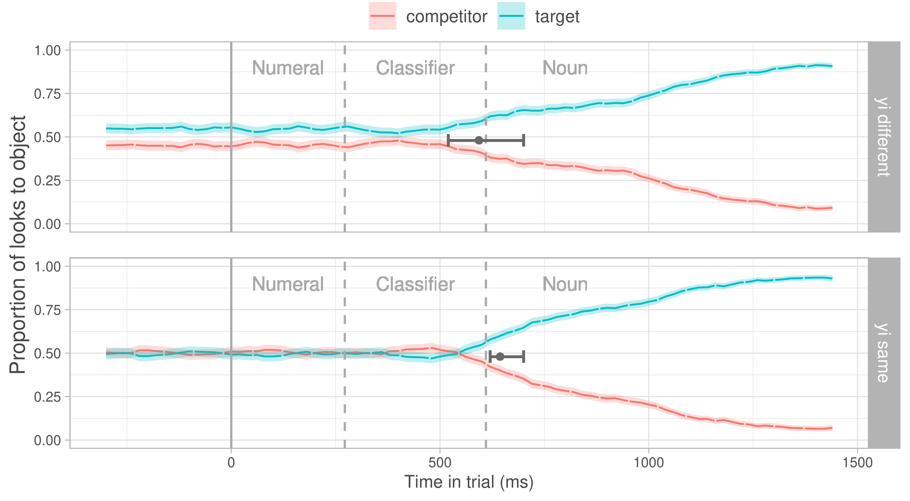Experiment 1 Results
The T3 sandhi ("liang"):
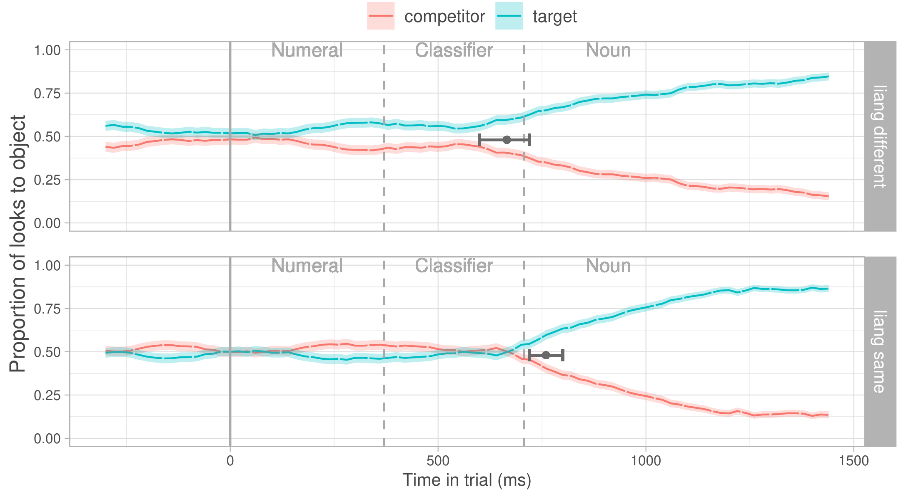Experiment 1 Results
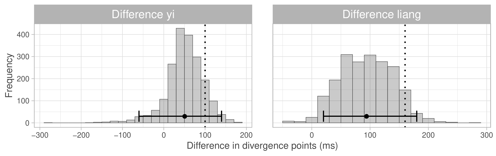Experiment 2 Results
The yi sandhi ("yi"):
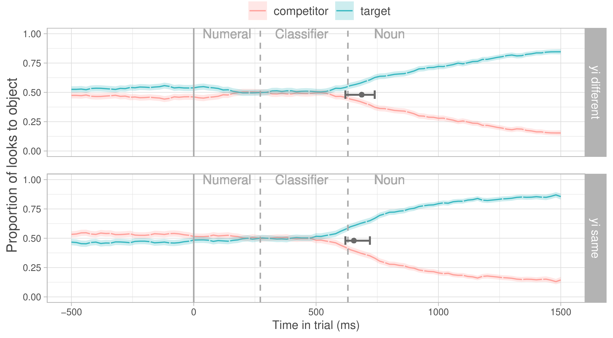Experiment 2 Results
The T3 sandhi ("liang"):
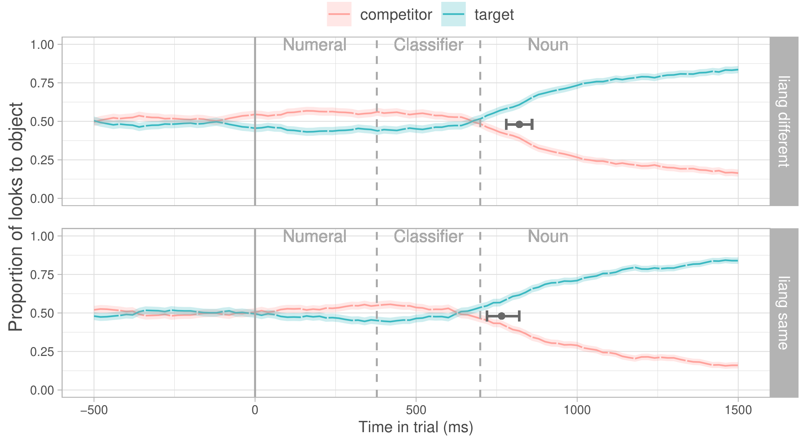Experiment 2 Results
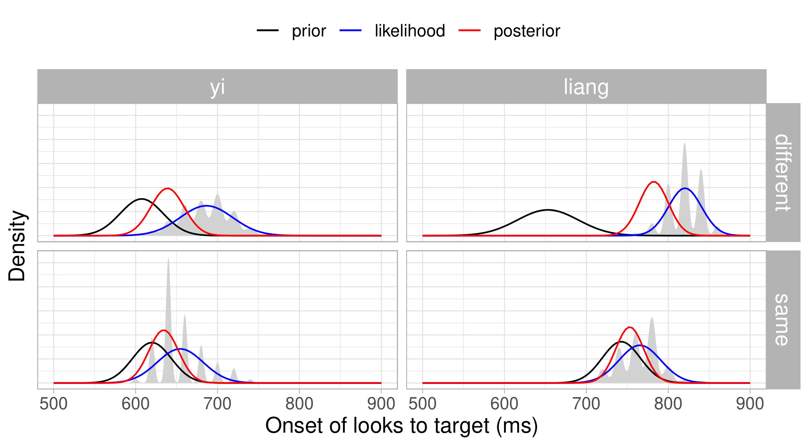Experiments 1 and 2
Can listeners use tone sandhi to generate predictions?
Perhaps, but this effect is not always replicated.
Can listeners use tone sandhi to generate predictions?
Perhaps, but this effect is not always replicated.
Can listener use tone sandhi to detect prediction errors / revise their predictions?
Experiment 3
Experiment 3
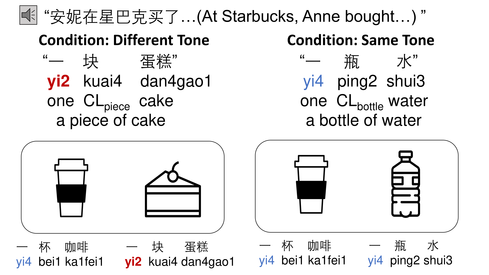Experiment 3 Results
The yi sandhi ("yi"):
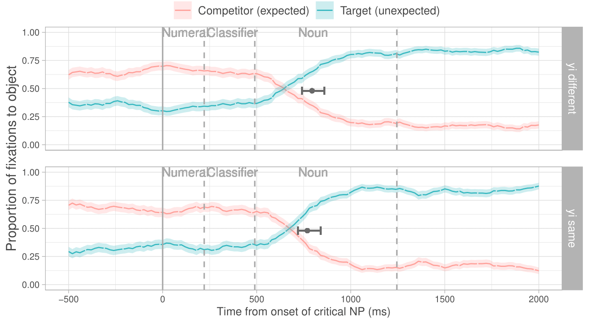Experiment 3 Results
The T3 sandhi ("liang"):
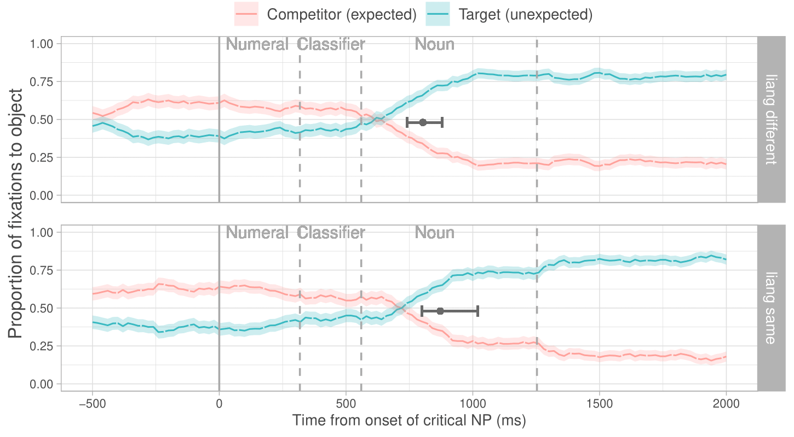Can listeners use tone sandhi to generate predictions?
Perhaps, but this effect is not always replicated.
Can listener use tone sandhi to detect prediction errors / revise their predictions?
No evidence for revising prediction using tone sandhi.
Take home message
Phonology's role in prediction may be limited.
But why?
We see that many aspects of language are involved in prediction. Why not phonology?
But why?
We see that many aspects of language are involved in prediction. Why not phonology?
Processing time hypothesis:
- Evidence that English articles 'a/an' and Chinese tone sandhi are involved in prediction when SOA is long / speech rate is low (Ito et al., 2016; Liu et al., 2023).
- Maybe the comprehender needs more processing time in order to get phonology involved in prediction.
But why?
We see that many aspects of language are involved in prediction. Why not phonology?
The 'Filter' hypothesis:
- As language involves several levels of representation that require different levels of abstraction (phonology - semantics - syntax),
- Maybe only information at a certain level of abstraction or above (e.g. semantics and above) is involved in prediction (under normal circumstances).
Thank you!
References
Altmann, G. T., & Kamide, Y. (1999). Incremental interpretation at verbs: Restricting the domain of subsequent reference. Cognition, 73(3), 247-264.
Chow, W. Y., Smith, C., Lau, E., & Phillips, C. (2016). A “bag-of-arguments” mechanism for initial verb predictions. Language, Cognition and Neuroscience, 31(5), 577-596.
DeLong, K. A., Urbach, T. P., & Kutas, M. (2005). Probabilistic word pre-activation during language comprehension inferred from electrical brain activity. Nature neuroscience, 8(8), 1117-1121.
Federmeier, K. D., & Kutas, M. (1999). A rose by any other name: Long-term memory structure and sentence processing. Journal of memory and Language, 41(4), 469-495.
Ito, A., Corley, M., Pickering, M. J., Martin, A. E., & Nieuwland, M. S. (2016). Predicting form and meaning: Evidence from brain potentials. Journal of Memory and Language, 86, 157-171.
Kamide, Y., Altmann, G. T., & Haywood, S. L. (2003). The time-course of prediction in incremental sentence processing: Evidence from anticipatory eye movements. Journal of Memory and language, 49(1), 133-156.
Kutas, M., & Hillyard, S. A. (1984). Brain potentials during reading reflect word expectancy and semantic association. Nature, 307(5947), 161-163.
Lew-Williams, C., & Fernald, A. (2007). Young children learning Spanish make rapid use of grammatical gender in spoken word recognition. Psychological science, 18(3), 193-198.
Lew-Williams, C., & Fernald, A. (2010). Real-time processing of gender-marked articles by native and non-native Spanish speakers. Journal of memory and language, 63(4), 447-464.
Nieuwland, M. S., Politzer-Ahles, S., Heyselaar, E., Segaert, K., Darley, E., Kazanina, N., ... & Huettig, F. (2018). Large-scale replication study reveals a limit on probabilistic prediction in language comprehension. ELife, 7, e33468.
Shun, L., Chen, X., & Wang, S. (2023). The involvement of phonological information during spoken language prediction: evidence based on Chinese tone sandhi. OSF Preprints.